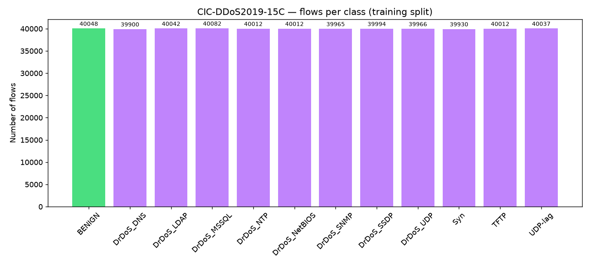
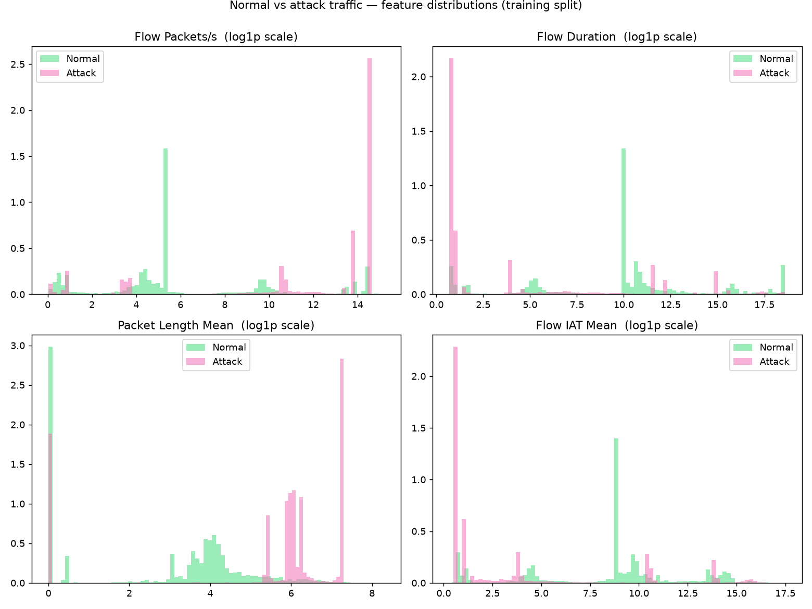
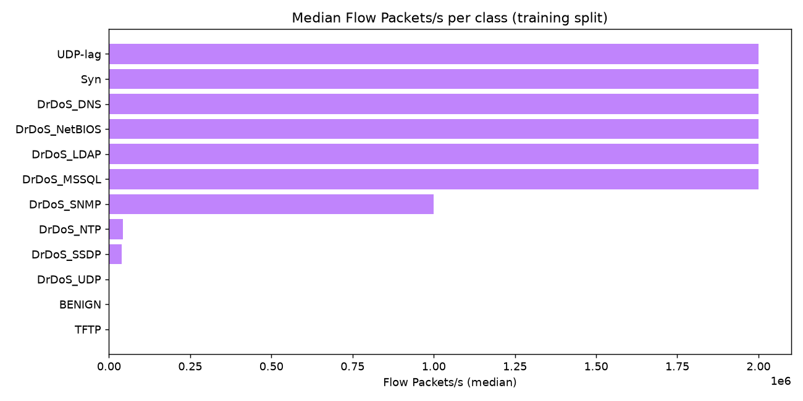
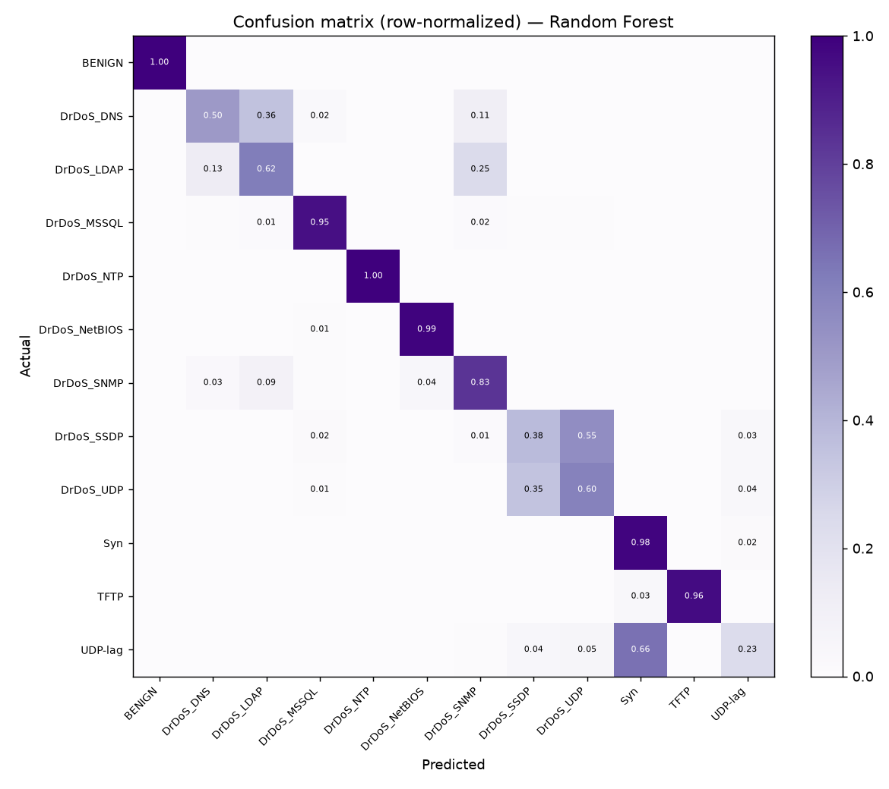
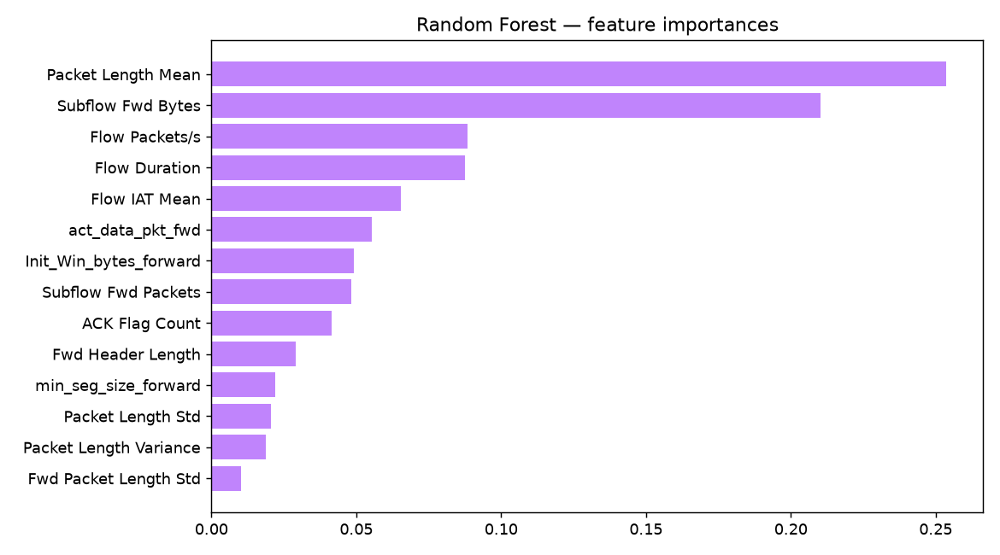

Detecting DoS/DDoS Attacks to Protect Website Availability
Analyzing normal vs attack network traffic on the public CIC-DDoS2019-15C dataset
Background — DoS vs DDoS, and Why Availability Matters
A Denial of Service (DoS) attack tries to make a website or online service unavailable to real users — usually by overwhelming it with more traffic than its servers, bandwidth, or network connections can handle, or by exploiting a weakness that consumes a scarce resource (for example, unfinished connections that never get closed). A Distributed Denial of Service (DDoS) attack is the same idea carried out from many machines at once, typically a botnet of compromised devices. The key differences:
| DoS | DDoS | |
|---|---|---|
| Source of traffic | One machine / one IP address | Thousands or millions of machines (botnet) |
| Scale | Smaller — easier to block once identified | Huge and geographically spread — hard to block |
| Detection challenge | Spot the single abusive source | Attack traffic looks like many "normal-looking" clients at once |
| Common types | SYN flood, HTTP flood, UDP flood | Volumetric (DNS/NTP amplification), protocol, and application-layer floods |
Website availability is one of the core properties of information security (the "A" in the CIA triad, together with confidentiality and integrity). When a site is flooded, legitimate users get timeouts, errors, or impossibly slow pages — for a business that means lost customers, lost revenue, and lost trust. The good news is that attack traffic is not statistically identical to normal traffic: floods generate unusually high packet rates, repetitive packet sizes, and strange flow patterns. If a detector can learn what "normal" looks like, it can flag abnormal flows early — enabling rate-limiting, blackholing, or scrubbing before real users are locked out.
Research Problem
Websites are constantly exposed to denial-of-service activity, and DDoS attacks have grown in both volume and sophistication. Traditional static defenses (fixed rate limits, simple thresholds) either block too much legitimate traffic or react too slowly when the attack is distributed across many sources that individually look normal.
The research problem is: network flow data contains patterns that distinguish benign traffic from DoS/DDoS attack traffic, but a practical detector must prove it can separate them reliably — with high recall on attacks (so attacks are not missed) and high precision (so real users are not blocked). This project tests whether standard flow features and a straightforward machine-learning model are enough to make that separation on a large, public, peer-reviewed dataset.
Assignment 7 — the analysis described below was actually run on the real downloaded dataset (run date and metrics in the Results section). Nothing on this page is simulated or copied from another report, and no real attack traffic was generated.
Research Question
Can abnormal network-flow features — packet rate, flow duration, inter-arrival time, and packet-length statistics — reliably separate benign (normal) traffic from DoS/DDoS attack traffic on the CIC-DDoS2019-15C dataset?
"Reliably" is deliberately measurable: it means high macro F1-score across all 12 classes and a confusion matrix that shows attacks are not being confused with benign traffic (and vice versa).
Research Objectives
- Acquire and verify a real public dataset — download the official train/test splits of CIC-DDoS2019-15C from Hugging Face and verify its documented shape (rows, features, class balance) against the dataset card.
- Clean the flow data properly — handle the infinite and missing values that CICFlowMeter produces, without leaking test-set statistics into training.
- Visualize normal vs attack traffic — compare benign and attack flows on the features most associated with flooding (packet rate, duration, packet length, inter-arrival time).
- Train and compare detectors — a Logistic Regression baseline and a Random Forest classifier on the official split.
- Evaluate honestly — report accuracy, per-class precision, recall, and F1-score, plus a confusion matrix, so weaknesses (not just strengths) are visible.
- Connect results to availability protection — explain what these metrics would mean for a real web server's defense decisions, and state clearly what this offline study cannot prove.
Dataset — CIC-DDoS2019-15C
- Name: CIC-DDoS2019-15C (a preprocessed, feature-selected version of CIC-DDoS2019)
- Source link (verified live): https://huggingface.co/datasets/RonaldoMPF/CIC-DDoS2019-15C
- Original dataset: CIC-DDoS2019 by the Canadian Institute for Cybersecurity (University of New Brunswick) — unb.ca/cic/datasets/ddos-2019.html
- Associated paper: Distributed Denial of Service Detection: Enhancing Machine Learning Models for Multiclass Classification — doi:10.1049/ntw2.70014
- Format / size: CSV, about 47.5 MB total
Description
The dataset contains 600,000 network flow records generated with CICFlowMeter from a controlled testbed where real DDoS attack tools were run against victim machines — 480,000 in the official training split and 120,000 in the official test split. Each record has 14 selected flow features plus a Label column (15 columns total). The 12 classes are perfectly balanced at 50,000 samples each:
| Class | Meaning |
|---|---|
BENIGN | Normal, non-attack traffic |
DrDoS_DNS, DrDoS_NTP, DrDoS_SNMP, DrDoS_UDP, DrDoS_LDAP, DrDoS_NetBIOS, DrDoS_MSSQL, DrDoS_SSDP | Reflection/amplification DDoS attacks — small queries spoofed as the victim, huge replies aimed at it |
Syn | TCP SYN flood — connection requests that are never completed |
TFTP, UDP-lag | UDP-based floods abusing the TFTP protocol / laggy UDP flooding |
The features are all computable in real time from live traffic (flow duration, forward packet length statistics, packets per second, inter-arrival times, header lengths, ACK flag counts, window sizes), which is exactly what makes the dataset usable for testing a website-availability detector. Full credit goes to the UNB CIC team and the paper's authors — this project only re-uses their published data.
Methods — Preprocessing and Analysis
The complete, reproducible pipeline is in
Assignment7/dos_ddos_analysis.py (run instructions in
Assignment7/README.md). Steps, in order:
-
Load the official splits —
train.csv(480,000 rows) andtest.csv(120,000 rows) exactly as published; the split is never re-shuffled, so results are comparable with the dataset's own paper. -
Clean — strip the padded column names, drop the leftover index
column, replace any
+/-infvalues CICFlowMeter can emit (e.g. division by a zero flow duration) withNaN, then impute missing values with the training-set median only — test statistics are never used for imputation. Measured on this dataset: the cleaning check found 0 infinite or missing values after replacement, because the 15C version is already pre-cleaned — the guard exists so the same script runs safely on the raw CIC files too. (Some extreme finite sentinel values, such as large negative header/window measurements, remain in the data and are kept as published.) - Visualize — class distribution; BENIGN-vs-ATTACK histograms of Flow Packets/s, Flow Duration, Packet Length Mean, and Flow IAT Mean (log1p scale, because flood rates span several orders of magnitude); per-class median packet rate.
-
Standardize —
StandardScalerfit on training features (used by Logistic Regression; the Random Forest uses raw features since trees are scale-invariant). -
Train — Logistic Regression baseline
(
max_iter=1000) and a Random Forest (n_estimators=100), both with fixedrandom_state=42for reproducibility. -
Evaluate — accuracy, macro and per-class precision / recall /
F1-score, and a row-normalized confusion matrix; all metrics written to
Assignment7/results/analysis_results.jsonand the charts below saved as PNGs.
Ethics note: this is offline analysis of a published dataset. No DoS or DDoS traffic was generated, and no system was attacked.
Visualizations — Normal vs Attack Traffic
All charts below were generated by actually running
Assignment7/dos_ddos_analysis.py on the downloaded dataset
(run date: October 29, 2026). The charts live in
Assignment7/results/.



Results
Two models were trained on the official 480,000-row training split and evaluated on the
official 120,000-row test split (fixed random_state=42). These are the
actual measured outputs of the run on 2026-10-29 — machine-readable
source: Assignment7/results/analysis_results.json.
Model comparison (12-class problem)
| Model | Accuracy | Macro precision | Macro recall | Macro F1 | Training time |
|---|---|---|---|---|---|
| Logistic Regression (baseline, standardized features) | 63.26% | 0.6425 | 0.6332 | 0.5912 | ~146 s |
| Random Forest (100 trees) | 75.37% | 0.7628 | 0.7539 | 0.7406 | ~21 s |
The Random Forest beats the linear baseline on every metric, which makes sense: the attack signatures are non-linear (a flood is a combination of high packet rate, repeated packet sizes, and short durations that a linear boundary cannot capture).
Random Forest — per-class precision, recall, F1
| Class | Precision | Recall | F1-score | Test support |
|---|---|---|---|---|
| BENIGN (normal traffic) | 0.9985 | 0.9994 | 0.9989 | 9,952 |
| DrDoS_DNS | 0.7446 | 0.5038 | 0.6010 | 10,100 |
| DrDoS_LDAP | 0.5726 | 0.6195 | 0.5951 | 9,958 |
| DrDoS_MSSQL | 0.9316 | 0.9454 | 0.9384 | 9,918 |
| DrDoS_NTP | 0.9940 | 0.9971 | 0.9956 | 9,988 |
| DrDoS_NetBIOS | 0.9570 | 0.9863 | 0.9714 | 9,988 |
| DrDoS_SNMP | 0.6785 | 0.8339 | 0.7482 | 10,035 |
| DrDoS_SSDP | 0.4838 | 0.3796 | 0.4254 | 10,006 |
| DrDoS_UDP | 0.4963 | 0.6007 | 0.5435 | 10,034 |
| Syn (SYN flood) | 0.5898 | 0.9821 | 0.7370 | 10,070 |
| TFTP | 0.9962 | 0.9647 | 0.9802 | 9,988 |
| UDP-lag | 0.7105 | 0.2345 | 0.3526 | 9,963 |
Confusion matrix (Random Forest, row-normalized)

Assignment7/results/confusion_matrix_logistic_regression.png.
Reading the results — what protects availability?
The 12-class numbers look moderate (75.37%), but for the website-availability question the decisive numbers are the ones about normal traffic, and they are strong:
- Normal traffic is almost never blocked (false alarms). Of 9,952 BENIGN test flows, the Random Forest flagged only 6 as attacks (BENIGN recall 99.94%). A defender using this detector would essentially not lock out real users.
- Flags are trustworthy. BENIGN precision is 99.85% — when the model says "attack," it almost always really is one, so automated mitigation (rate-limiting, scrubbing) would rarely be triggered by innocent traffic.
- Attacks are almost never mistaken for normal. Summing the confusion-matrix column for BENIGN: only 15 of ~110,000 attack flows were misclassified as normal — an attack-to-normal leakage of about 0.01%. A flood would essentially not sneak through as benign.
- Collapsed to the operational question (benign vs attack), accuracy is 99.98% (119,979 of 120,000 test flows correct — derived directly from the confusion matrix). The remaining 75.37% multiclass difficulty is almost entirely confusion between attack families (which amplification protocol was used), not between attack and normal.
The honest weaknesses are also visible: UDP-lag (recall 0.2345) is frequently mistaken for the Syn class, and DrDoS_SSDP is often confused with DrDoS_UDP — both pairs are floods with similar UDP packet-size and rate patterns, so this confusion is understandable but means attributing the exact attack type is unreliable at the edges.
What the model learned

AI-Generated Movie — DoS/DDoS, Visualized
For this assignment I also created an AI-generated short movie about cybersecurity and
denial-of-service attacks, produced with Google Flow. Once exported,
the MP4 lives at assets/assignment7/ai-cybersecurity-movie.mp4 and plays
below.
The AI-generated movie has not been exported yet. It will appear here automatically once the file exists at:
assets/assignment7/ai-cybersecurity-movie.mp4
Generated with Google Flow. To add the movie, export it as an MP4 and save it at the path above — the player is responsive, has standard controls (play/pause, volume, captions, fullscreen), and works on phones and tablets.
Conclusions
To answer the research question: yes — abnormal network-flow features reliably separate normal traffic from DoS/DDoS attack traffic on this dataset, at least in the operational sense that matters for availability. The Random Forest trained here (75.37% macro accuracy across 12 classes, macro F1 0.7406) collapses to 99.98% accuracy on the benign-vs-attack decision when read from its confusion matrix: only 6 of 9,952 normal flows were flagged, and only 15 of ~110,000 attack flows passed as normal.
Practically, that profile is exactly what a website-availability defense needs: extremely low false positives (real users stay online) combined with near-zero missed floods (attack traffic is not waved through). The feature importances and the distribution plots agree on why this works — floods move many same-sized packets at extreme rates, which no normal browsing session does.
The honest boundary of the claim: the residual multiclass errors (UDP-lag → Syn, SSDP ↔ UDP) show the model is much better at "is this an attack?" than "which precise attack is this?" — and the dataset itself is lab-generated and balanced, so production performance would be lower. Conclusions are therefore about separability of the traffic classes, not a deployable product.
Limitations
- Lab-generated attacks. CIC-DDoS2019 was produced in a controlled testbed with a limited set of attack tools. Real-world attacks vary in timing, spoofing, and protocols, so field performance would differ.
- Perfectly balanced classes. The 50,000-per-class balance makes the math clean but does not reflect reality, where attack traffic is often a small fraction of total flows. Accuracy on this dataset will be optimistic compared to production.
- Features pre-selected. The 15C version ships 14 features chosen by the original paper. A real deployment would start from raw flows and feature engineering decisions of its own.
- Flow-level, not packet-level. The model classifies completed flow records; it does not measure how quickly a detector could react mid-attack, nor how many legitimate flows would be harmed before detection.
- Not tested against evasion. Low-and-slow attacks (traffic kept just under normal thresholds) or encrypted application-layer floods may not show the same statistical signatures.
- Offline study only. No live server, no rate-limiting, and no actual mitigation was exercised — the study shows separability of classes, not end-to-end availability protection.
Future Improvements
- Streaming / online detection. Move from batch CSVs to a streaming evaluation (e.g. River or a Kafka-style feed) to measure detection latency — how many seconds after an attack starts would the alarm fire?
- Imbalanced, real-world scenarios. Re-balance the data to production ratios (e.g. 1% attack) and re-measure precision, because false positives are what hurt real users.
- Compare more models. Gradient Boosting / XGBoost, k-NN, and a small neural network against the two baselines here, with cross-validation.
- Time-aware splitting. Split by capture time instead of random rows, to test whether a model trained on Monday's traffic still works on Tuesday's.
- Mitigation layer. Connect the detector to a simulated response — rate-limiting or challenge pages — and measure how much legitimate traffic is preserved during an attack.
- Explainability. Use SHAP or feature importances to show why a flow was flagged, following the explainability work from my AI Research project.